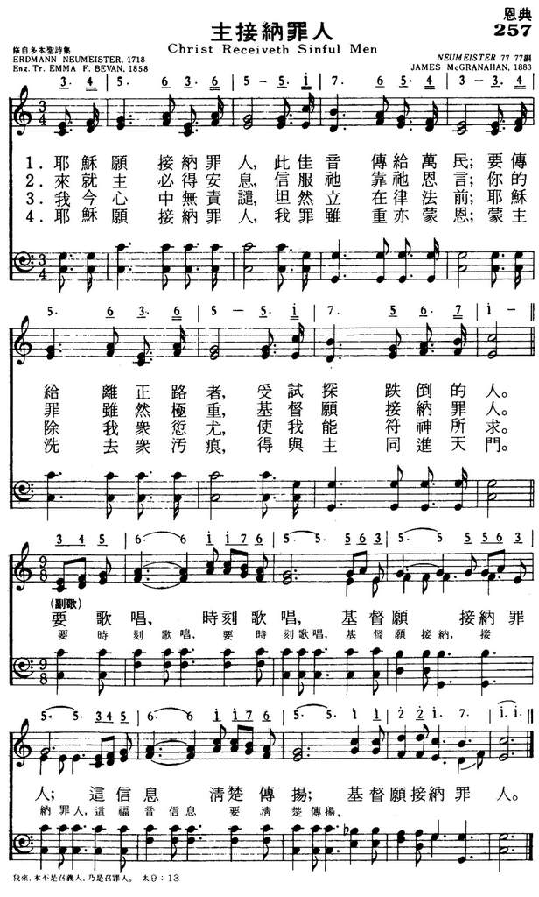

|
|
|
|
1 Sinners Jesus will receive: Chorus: 2 Come, and He will give you rest; 3 Now my heart condemns me not, 4 Christ receiveth sinful men, |
257主接纳罪人
1．耶稣愿接纳罪人
此佳音传给万民 要传给离正路者 受试探跌到的人 副歌: 要歌唱 时刻歌唱 基督愿接纳罪人 这信息清楚传扬 基督愿接纳罪人 2．来就主必得安息 信服祂靠祂恩言 你的罪虽然极重 基督愿接纳罪人 3．我今心中无责谴 坦然立在律法前 耶稣除我众愆尤 使我能符神所求 4．耶稣愿接纳罪人 我罪虽重亦蒙恩 蒙主洗去众污痕 得与主同进天门 |
|
https://www.mred365.cn/szxg/7260.html
 https://hymnary.org/hymn/BH2008/page/646
|
|
|
|
|


Christ receiveth sinful men with lyrics https://www.youtube.com/watch?v=MafwGtAQG1g
LX1322
Christ Receiveth Sinful
Men
257主接纳罪人
| Text: | Christ Receiveth Sinful Men |
| Author: | Erdmann Neumeister |
| Translator: | Emma F. Bevan |
| Tune: | NEUMEISTER |
| Composer: | James McGranahan |
| Short Name: | Erdmann Neumeister |
| Full Name: | Neumeister, Erdmann, 1671-1756 |
| Birth Year: | 1671 |
| Death Year: | 1756 |
Neumeister, Erdmann, son of Johann Neumeister, schoolmaster, organist, &c, at Uechteritz, near Weissenfels, was born at Uechteritz, May 12, 1671. He entered the University of Leipzig in 1689, graduated M.A. in 1695, and was then for some time University lecturer. In June 1697 he was appointed assistant pastor at Bibra, and in 1698 pastor there, and assistant superintendent of the Eckartsberg district. He was then, in 1704, called by Duke Johann Georg, to Weissenfels as tutor to his only daughter, and assistant court preacher, and shortly afterwards court preacher. After the death of this princess, Neumeister was invited by the Duke's sister (she had married Count Erdmann II. von Promnitz) to Sorau, where on New Year's Day, 1706, he entered on the offices of senior court-preacher, consistorialrath, and superintendent. Finally, in 1715, he accepted the appointment of Pastor of St. James's Church at Hamburg, entering on his duties there Sept. 29, 1715. He died at Hamburg, Aug. 18 (not 28), 1756 (Bode, p. 120; Allgemeine Deutsche Biographie. xxiii. 543, &c).
Neumeister was well known in his day as an earnest and eloquent preacher, as a vehement upholder of High Lutheranism, and as a keen controversialist against the Pietists and the Moravians by means of the pulpit as well as the press. His underlying motive was doubtless to preserve the simplicity of the faith from the subjective novelties of the period. He was the author of one of the earliest historico-critical works on German Poetry (1695"); and of many Cantatas for use in church, of which form of Fervice he may be regarded as the originator. He had begun to write hymns during his student days, and in later years their composition was a favourite Sunday employment. He takes high rank among the German hymn-writers of the 18th century, not only for the number of his productions (over 650), but also for their abiding value. A number are founded on well-known hymns of the 16th and 17th century; and many of his later productions are inferior. Of his earlier efforts many soon took and still hold their place as standard German hymns; and deservedly so, for their simple, musical style, scripturalness, poetic fervour, depth of faith and Christian experience, and for their clear-cut sayings which have almost passed into proverbial use. They appeared principally in the following works:—
1. DerZugang zum Gnadenstuhle Jesu Christo. This was a devotional manual of preparation for Holy Communion, with interspersed hymns. The first edition appeared at Weissenfels in 1705, the 2nd 1707, 3rd 1712, 4th 1715. The earliest edition of which precise details are available is the 5th edition 1717, from which Wetzel, ii. 231, quotes the first lines of all the 77 hymns (the page references to the earlier eds. given by Fischer appear to be conjectural); and the earliest ed. available for collation was the 7th edition, 1724 [Göttingen University Library]. In the later editions many hymns are repeated from his other works.
2. Fünffache Kirchen-Andachten, Leipzig 1716 [Wernigerode Library], a collected edition of his Cantatas (Wernigerode Library has the 1704 ed. of his Geistliche Cantaten), and similar productions. A second set (Fortgesetzte) appeared at Hamburg in 1726 [Hamburg Town Library]; and a third set (Dritter Theil) at Hamburg in 1752 [Hamburg Town Library].
3. Evangelischer Nachklang, Hamburg, 1718 [Hamburg Town Library], with 86 hymns on the Gospels for Sundays and Festivals, originally written to form conclusions to his sermons. A second set of 86 appeared as the Anderer Theil at Hamburg, 1729 [Hamburg Town Library].
Those of Neumeister’s
hymns which have passed into English are:—
i. Gott verlasst die Seinen nioht, Ei so fahret hin ihr
Sorgen. Cross and Consolation. In his Evangelical
Nachklang, 1718, No. 71, p. 149, in 5 stanzas of 8 lines, appointed for
the 25th Sunday after Trinity, in Burg's Gesang-Buch,
Breslau, 1746, it appears in two forms. No. 127 is the original with
alterations, and arranged in 11 stanzas of 4 lines, with the refrain "Gott
verlässt die Seinen nicht." No. 128 is a form in 3 stanzas of 6 lines,
rewritten to the melody, "Jesus meine Zuversicht", and beginning with stanza
iii. line 5, of the original, viz. "Gott verlässt die Seinen nicht, Nach dem
Seufzen, nach dem Weinen."
ii. Jesu, grosser Wunderstern. Epiphany.
In his Kirchen-Andachten, 1716, p. 646, in 4 st. of 6
1., with the motto,
Auf ihr Christen insgemein!
Stellt euch mit den Weisen ein.
Jesus muss geschenket sein."
It is a hymn on the Gifts of the Magi, and the spiritual sense in which we can offer the same—-the Gold of Faith, the Frankincense of Prayer, the Myrrh of Penitence. In the Berlin Geistliche Lieder, ed. 1863, No. 208. Translated as:—
“CHRIST RECEIVETH SINFUL MEN” hymnstudiesblog
“…Christ Jesus came into the world to save sinners…” (1 Tim. 1:15)
INTRO.:
A song which tells us that because God is willing to receive sinners Christ came into the world to save us is “Christ Receiveth Sinful Men” (#295 in Hymns for Worship Revised, #643 in Sacred Selections for the Church). The text was written by Erdmann Neumeister (or Neumaster), who was born in Ucheritz, Germany, on May 12, 1671, the son of Johann Neumeister, a schoolteacher and organist. Educated at the University of Leipzig, from which he graduated in 1695, he lectured at the university for two years and then began his work as a Lutheran minister in 1698 at Bibra in the Eckartsberg District. In 1704 he moved to Weisenfels, where he also served as tutor to Duke Johann Georg’s daughter, and after her death two years later he went to Sorau.
Then in 1715, Neueister became minister at St. James Church in Hamburg, where he remained for the next 41 years until his death. A champion of the older, conservative Lutheranism in contrast to the Pietists, he had begun around 1700 writing hymn texts and is regarded as the originator of the church cantata. In all, he authored about 650 hymns, this one being composed in 1718 and first appearing in his Evangelischer Nachlang, a collection of 86 original hymns written to conclude his sermons. Neumeister died on Aug. 18, 1756, in Hamburg, Germany. More than a century later, a number of German sacred songs, including this one, were translated into English by the British hymnist Emma Frances Shuttleworth Bevan (1827-1909).
Mrs. Bevan was the daughter of Anglican minister Philip Nicholas Shuttleworth and the wife of London banker R. C. L. Bevan. She published her translations as Songs of Eternity in 1858. Then some 25 years later, in 1883, the tune (Neumaster) was composed and the chorus was added both by James McGranaham (1840-1907). The hymn as we have it was published in The Gospel Male Choir No.2 where numerous alterations were made by McGrahanan to adapt the words to his music. Erdmann Neumeister had passed on some 127 years previously, but the work of these three people over 163 years produced a well-known and much-loved invitation song.
Among hymnbooks published by members of the Lord’s church for use in churches of Christ, the song has appeared in the 1921 Great Songs of the Church (No. 1) and the 1937 Great Songs of the Church No. 2 both edited by E. L. Jorgenson; the 1948 Christian Hymns No. 2 and the 1966 Christian Hymns No. 3 both edited by L. O. Sanderson; the 1959 Majestic Hymnal No. 2 and the 1978 Hymns of Praise both edited by Reuel Lemmons; the 1963 Abiding Hymns edited by Robert C. Welch; the 1963 Christian Hymnal edited by J. Nelson Slater; the 1965 Great Christian Hymnal No. 2 edited by Tillit S. Teddlie; the 1971 Songs of the Church, the 1990 Songs of the Church 21st C. Ed., and the 1994 Songs of Faith and Praise all edited by Alton H. Howard; the 1978/1983 Church Gospel Songs and Hymns edited by V. E. Howard; the 1986 Great Songs Revised (the text is set to a tune “Albertson” by Phoebe P. Knapp which we usually associate with “When My Love to Christ Grows Weak” to make it sound more “pleading”); the 1992 Praise for the Lord edited by John P. Wiegand; the 2007 edited by William D. Jeffcoat; the 2009 Favorite Songs of the Church and the 2010 Songs for Worship and Praise both edited by Robert J. Taylor Jr.; and the 2012 Psalms, Hymns, and Spiritual Songs edited by Steve Wolfgang et. al; in addition to Hymns for Worship and Sacred Selections.
The song reminds us that Christ will welcome any repentant sinner who responds to His gracious call in faith and obedience.
I. According to stanza 1, Jesus will receive sinners now just as He did in His
lifetime
Sinners Jesus will receive;
Sound this word of grace to all
Who the heavenly pathway leave,
All who linger, all who fall.
A. One of the criticisms leveled against Jesus was that He “receives sinners,”
and He justified this with the story of the good shepherd who sought the lost
sheep: Lk. 15:1-7
B. What makes it possible for Jesus to receive sinners is God’s grace: Eph.
2:8-9
C. This word of grace should be sounded to all who leave the heavenly pathway
and fall into sin, and that includes everyone: Rom. 3:23
II. According to stanza 2, Jesus can take even the sinfulest and give them rest
Come, and He will give you rest;
Trust Him, for His Word is plain;
He will take the sinfulest;
Christ receiveth sinful men.
A. Jesus has promised to give rest to those who come to Him: Matt. 11:28-30
B. However, one of the conditions involved in coming to Jesus for rest is to
trust the Lord: Ps. 37:3-5
C. Just as He did to sinful Israel, God calls us to forsake our wicked ways and
return to Him, saying that He will receive us with mercy and pardon: Isa. 55:6-7
III. According to stanza 3, not in Hymns for Worship, Jesus cleanses sinners by
His death
Now my heart condemns me not,
Pure before the law I stand;
He who cleansed me from all spot,
Satisfied its last demand.
A. It is now possible for our hearts not to condemn us: 1 Jn. 3:20-21 (Ellis
Crum in Sacred
Selections changes this phrase to “Now my life condemns me
not,” apparently unaware of John’s statement)
B. The reason for this is that Christ cleanses us from every spot or sin: 1 Jn.
1:7
C. He satisfied the law’s last demand by suffering on the cross for our sins: 1
Pet. 3:18
IV. According to stanza 4, the aim of Jesus in purging sinners is to make it
possible for us to go to heaven
Christ receiveth sinful men,
Even me with all my sin;
Purged from every spot and stain,
Heaven with Him I enter in.
A. Christ will receive all who come to Him, even you and me: Rev. 22:17
B. When we come to Him, He will purge us from every spot and stain: Heb. 1:1-3
C. As a result, He makes it possible for us to enter heaven with Him: 1 Pet.
1:3-5
CONCL.:
The chorus exultantly encourages us to proclaim this good news of salvation from sin through Christ to the whole world:
Sing it o’er and over again;
Christ receiveth sinful men;
Make the message clear and plain:
Christ receiveth sinful men.
As Christians, we should be thankful that Christ was willing to receive us and then spread the good news to others that “Christ Receiveth Sinful Men.”
https://hymnstudiesblog.wordpress.com/2013/05/20/christ-receiveth-sinful-men/
Words: Erdmann Neumeister (b. May 12, 1671; d. Aug. 18,
1756)
Music: James McGranahan (b. July 4, 1840; d. July 9, 1907)
Links:
Wordwise Hymns
The Cyber
Hymnal
Note: James McGranahan sometimes used the initials “G. M. J.” as a pen name.
Christ’s kind reception of “sinners” is spoken of with a self-righteous sneer, by the Jewish scribes and Pharisees:
“Then all the tax collectors and the sinners drew near to Him to hear Him. And the Pharisees and scribes complained, saying, ‘This Man receives sinners and eats with them’” (Lk. 15:1-2).
Regarding “the tax collectors and the sinners.” The tax collectors were Jews who worked for the Roman government, and thus were seen as siding with the oppressors. Further, as long as the Romans got their “cut,” these men were allowed to demand as much money in taxes as they liked. Many were thus dishonest, and lining their own pockets with money virtually extorted from their own people.
Zacchaeus provides an example. When he trusted in Christ, he expressed his willingness to restore any money taken unfairly (Lk. 19:2, 8). There were no doubt some honest collectors (perhaps Matthew was, Matt. 9:9), but they all had a bad reputation with the Jewish leaders.
The “sinners” were not necessarily evil or wicked people. Any who did not follow all the meticulous rules laid down by the Pharisees, any whom they deemed to be ceremonially unclean, were labeled sinners. (They called Jesus Himself a sinner! Jn. 9:24.)
But the important thing to note here is that these who were seen as being of no account sought Jesus out (Matt. 9:10). They recognized their own spiritual need, and came to hear Him, and ultimately to heed Him (Mk. 2:15). In this they were the opposite of the Jewish leaders, who considered themselves spiritually superior, and rejected Christ and His message.
The word “receives,” in Luke 15:2, means to welcome and accept. But Christ could only (and can only) welcome and accept those who come to Him. That did not include the self-righteous leaders of the Jews. Though they stood in His presence, they rejected Him and were blind to their own desperate spiritual need (cf. Mk. 2:16-17).
Erdmann Neumeister’s fine hymn tells of the ready welcome sinners will receive, when they turn to the Saviour. That is “the word of grace” we have to proclaim. It is part of the gospel message.
CH-1) Sinners Jesus will receive;
Sound this word of grace to all
Who the heavenly pathway leave,
All who linger, all who fall.
Sing it o’er and over again;
Christ receiveth sinful men;
Make the message clear and plain:
Christ receiveth sinful men.
The last two stanzas express a personal testimony. CH-3 describes the effectiveness of the work of salvation. Christ fulfilled the demands of God’s holy law and, in Him, we are “pure” and free from condemnation. CH-4 contains a lovely touch. Instead of taking the accusing tone of the Pharisees, “Listen up, all you sinners out there!” the author places himself among the sinners with, “Even me with all my sin.”
CH-4) Christ receiveth sinful men,
Even me with all my sin;
Purged from every spot and stain,
Heaven with Him I enter in.
Questions:
1) What beliefs and attitudes are part of the thinking of one who thinks
like a Pharisee?
2) What is the greatest need of these folk?
Links:
Wordwise Hymns
The Cyber
Hymnal